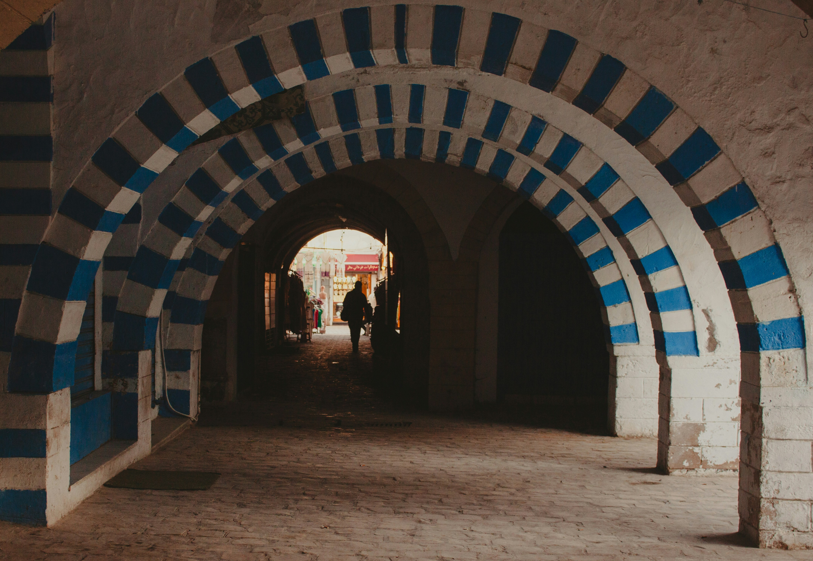
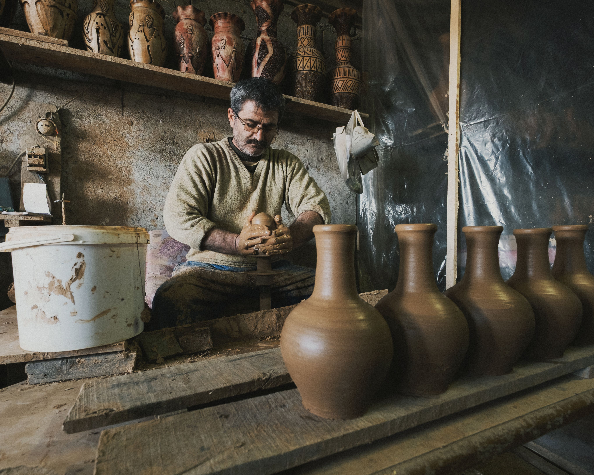
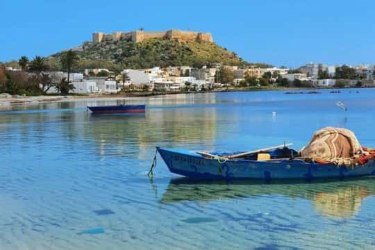

Explorez l'âme authentique du Cap Bon
Cap Bon Explorer vous invite à découvrir le patrimoine, les savoir-faire et les paysages du Cap Bon. Parcourez nos expériences, choisissez une activité et préparez votre visite grâce à une simulation de réservation simple et transparente.
Découvrir les activitésQui sommes-nous ?
Née à Nabeul, Cap Bon Explorer est une initiative locale dédiée à la valorisation du tourisme culturel, artisanal et naturel de la péninsule du Cap Bon. Notre équipe sélectionne des parcours authentiques auprès d'artisans potiers, de guides passionnés et d'acteurs locaux engagés dans la préservation de notre patrimoine méditerranéen.
À travers ce portail interactif, nous souhaitons offrir aux visiteurs un accès simple et transparent aux richesses de la région, de Hammamet à Kélibia en passant par Kerkouane. Que vous voyagiez seul, en famille ou en groupe, préparez votre prochaine escapade en quelques clics.
Nos expériences phares


Pourquoi découvrir le Cap Bon ?
- Un savoir-faire ancestral : Rencontrez les maîtres potiers et céramistes qui font la renommée de Nabeul.
- Un patrimoine historique unique : Explorez la cité punique de Kerkouane classée à l'UNESCO et les médinas côtières.
- Des paysages variés : Alternez entre randonnées au Djebel Abderrahmane et criques sauvages à Kélibia.
- Une gastronomie généreuse : Dégustez les épices, agrumes et produits frais au cœur des marchés locaux.
Prêt à planifier votre visite ?
Estimez instantanément le budget de votre sortie et bénéficiez d'une remise de 10 % dès 4 participants.
Simuler une réservation